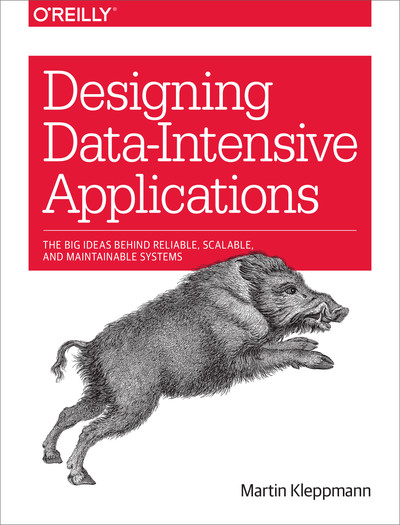
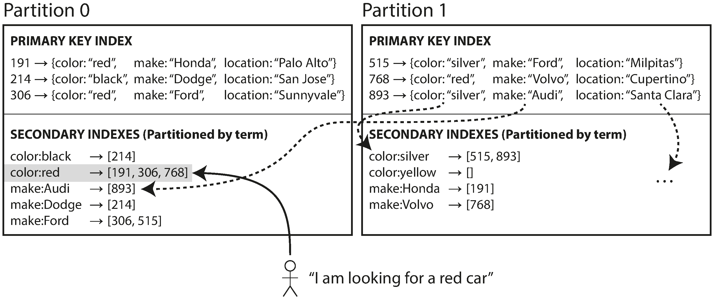
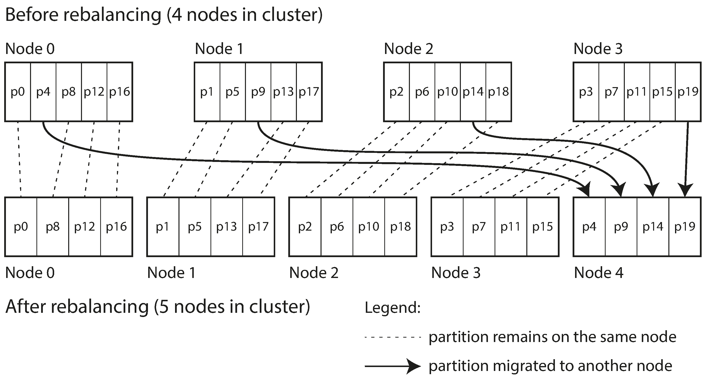

Knowledge Transfer Session • Part II: Distributed Data

"Clearly, we must break away from the sequential and not limit the computers. We must state definitions and provide for priorities and descriptions of data. We must state relationships, not procedures."
— Grace Murray Hopper, Management and the Computer of the Future (1962)
Why Chapter 6? Replication (Ch. 5) copies the same data onto multiple nodes. When a dataset is too big for one disk or throughput exceeds one CPU, we must split data into partitions (sharding) in a shared-nothing cluster.
Why Replication Alone Isn't Enough
Each record belongs to exactly one partition — each partition acts like a small independent database.
Chapter 6 Roadmap — 6 Core Sections
From splitting primary keys to indexing, rebalancing, and routing requests across a live cluster.
6.1 Partitioning & Replication
Terminology across DBs, shared-nothing architecture, and how leaders/followers combine with partitions.
6.2 Key-Value Partitioning
Key range vs hash, timestamp hot spots, compound keys, and relieving celebrity skew.
6.3 Secondary Indexes
Document-partitioned (local + scatter/gather) vs term-partitioned (global + async lag).
6.4 Rebalancing Partitions
Why mod N fails, fixed vs dynamic vs proportional vnodes, and auto-rebalance cascades.
Today, most databases do not auto-mitigate single-key skew — the application must split the key.
Relieving Hot Spots: Key Salting & Its Read Tax
🔬 Interactive Lab — Key Range vs Hash & Hot Spot Mitigation
💡 Compare Time-series vs Sensor prefix, and Celebrity vs Salting!
📊 Key Range Partitioning
🔑 Hash Partitioning
Section 6.3
Partitioning & Secondary Indexes
When queries search by values instead of primary keys
Why Secondary Indexes Complicate Partitioning
A secondary index (color:red, user:123, word hogwash) doesn't identify one unique record — matching items can live in any partition.
HBase & Voldemort avoided secondary indexes; Riak, MongoDB, Cassandra, Elasticsearch, DynamoDB tackle them in two ways.
6.3.1 Local Index
Partitioning by Document
Each partition maintains its own secondary index covering only the documents stored inside that partition.
✅ Writes: Fast & local — only touch the single partition owning that document ID
❌ Reads: Must scatter/gather across every partition and merge results
Used by: MongoDBRiakCassandraElasticsearchSolrCloudVoltDB
The Hidden Danger of Scatter/Gather: Tail Latency Amplification
Even when querying all partitions in parallel, the user waits for the slowest partition to respond.
6.3.2 Global Index
Partitioning by Term
Construct a global index covering all data, then partition that index by the indexed term (e.g., color:a–r vs s–z).
✅ Reads: Query one index partition directly (no scatter/gather!). Can range-scan terms or hash terms for balance.
❌ Writes: Writing 1 document can touch multiple partitions (data + color shard + make shard)
Used by: DynamoDB GSIRiak SearchOracle DW

Global Index Dilemma: 2PC vs Async Lag (Plus DIY Trap)
Footnote (ii) Warning — DIY App-Level Indexes: If your KV store lacks secondary indexes and you maintain them yourself in app code, race conditions & partial write failures easily leave indexes permanently out of sync with data!
Local (Document) vs Global (Term) Secondary Indexes
Dimension
Document-Partitioned (Local)
Term-Partitioned (Global)
Index Scope
Per-partition (only docs in that partition)
Global across all partitions (partitioned by term)
Write Path
✅ Single partition (fast, atomic)
❌ Multiple partitions (document + N term shards)
Read Path
❌ Scatter/gather across ALL partitions
✅ Single partition (plus doc fetches)
Consistency
Immediate within partition
Often asynchronous (eventual) unless 2PC
Latency Risk
Tail latency amplification on reads
Cross-partition write coordination / stale reads
Real Systems
MongoDB, Cassandra, Elasticsearch, Riak, VoltDB
DynamoDB GSI, Riak Search, Oracle Data Warehouse
Section 6.4
Rebalancing Partitions
Moving load cleanly as hardware scales, shrinks, or fails
Why Rebalance & The 3 Non-Negotiable Rules
Triggers for Rebalancing
📈 More traffic: Add CPUs to handle higher QPS
💾 More data: Add disks & RAM for storage
💥 Node failure: Surviving nodes take over
3 Minimum Requirements
⚖️ Fair share: Storage & QPS balanced afterward
🔄 Zero downtime: Reads/writes keep working during move
📦 Minimal transfer: Move only necessary bytes (save network & disk I/O)
6.4.1 Strategies How NOT to Do It: hash(key) mod N
Changing the node count N changes the remainder for almost every key, triggering a massive network storm.
Strategy 1: Fixed Number of Partitions
Create many more partitions than nodes upfront (e.g., 1,000 partitions across 10 nodes = ~100/node).
When a new node joins, it steals whole partitions from existing nodes
Key-to-partition mapping never changes — only partition-to-node ownership changes
Old assignment serves reads/writes while bulk data copies in the background
Supports mismatched hardware (assign more partitions to beefier nodes)
Used by: RiakElasticsearchCouchbaseVoldemort

The Fixed-Partition "Goldilocks" Dilemma
Because partition count is fixed at cluster creation (hard/impossible to change later), picking the right number is tricky:
Too Few Partitions
Caps maximum nodes (cannot exceed partition count)
Each partition grows huge as data grows
Rebalancing & node recovery become painfully slow
🎯 "Just Right"
Matches expected future dataset size
Fast recovery & fine-grained load balancing
Hard to predict if data grows 100× over 5 years!
Too Many Partitions
Per-partition management & metadata overhead
Each partition tracks files, Raft/Paxos groups, or indexes
Too small = wasted coordination overhead
Strategy 2: Dynamic Partitioning (Split & Merge)
Partitions grow and shrink automatically with data volume — like the top level of a B-Tree.
The Dynamic Caveat: Empty DB Bottleneck & Pre-Splitting
❌ Cold-Start Problem
An empty DB has no key distribution yet — so it starts with 1 partition on 1 node.
✅ Pre-Splitting Solution
Configure initial split boundaries on the empty database (supported by HBase & MongoDB).
Strategy 3: Proportional to Nodes (Cassandra vNodes)
Instead of fixed total partitions or fixed data size, keep a fixed number of partitions per node (e.g., Cassandra default: 256 vnodes/node).
Partitions shrink as you add nodes — keeping partition sizes stable as cluster scales
Requires hash partitioning (boundaries drawn from hash space — closest to Karger's consistent hashing)
Random splits can be uneven, so Cassandra uses 256 vnodes/node (improved in Cassandra 3.0 token allocation)
Used by: CassandraKetama
Rebalancing Strategies Compared
Strategy
Partition Count
Partition Size
Works With
Real Databases
Fixed Partitions
Constant forever
Grows with data
Hash partitioning
Riak, Elasticsearch, Couchbase, Voldemort
Dynamic
Scales with data volume
Bounded (min–max)
Key-Range & Hash
HBase, RethinkDB, MongoDB
Proportional
Scales with node count
Shrinks as nodes added
Hash partitioning
Cassandra (256/node), Ketama
6.4.2 Operations Automatic vs Manual Rebalancing
🤖 Fully Automatic
System decides when & where to move partitions with zero human input.
✅ Low routine ops work ❌ Expensive background I/O can hit live traffic unpredictably
🤝 Suggested + Human Commit
System computes an optimal rebalance plan, but waits for an administrator to approve.
✅ Best balance of safety & convenience CouchbaseRiakVoldemort
🛠️ Fully Manual
Admin explicitly defines every partition-to-node mapping.
✅ Total predictability ❌ High operational toil at scale
Why Auto-Rebalance + Auto-Failure Detection Is Dangerous
Automation can turn a temporary slowdown into a cluster-wide cascading failure:
Operational Takeaway: Keeping a human in the loop prevents false failure triggers from amplifying an outage.
Your team runs a leader–follower replicated database whose dataset now exceeds a single node's disk capacity, and write traffic saturates the leader's CPU. Adding more follower nodes fails to fix either bottleneck. Why is partitioning required here instead of more replication?
A) Followers only offload reads on full dataset copies, whereas partitioning splits data and writes across distinct nodes.
B) Followers must process every write synchronously before committing, whereas partitioning bypasses replication to avoid disk overhead.
C) Replication restricts each record to a single follower disk, whereas partitioning duplicates every record onto every cluster node.
D) Adding followers forces all reads through the single leader, whereas partitioning lets followers accept uncoordinated client writes.
Answer: A) Replication stores multiple copies of the same dataset on different nodes, so adding followers cannot increase total storage capacity beyond one node's disk or relieve single-leader write bottlenecks. Partitioning (sharding) breaks the dataset into smaller partitions distributed across many disks and processors, allowing data volume and query throughput to scale across nodes.
Q2Partition TerminologyScore: 0 / 0
Different distributed data systems use different names for what DDIA calls a partition. Which mapping accurately pairs every storage system with its corresponding native term for a partition?
A) MongoDB uses region, HBase uses tablet, Bigtable uses shard, Cassandra uses vBucket, and Couchbase uses vnode.
B) MongoDB uses shard, HBase uses region, Bigtable uses tablet, Cassandra uses vnode, and Couchbase uses vBucket.
C) Elasticsearch uses vnode, HBase uses shard, Bigtable uses region, Riak uses tablet, and Couchbase uses vBucket.
Answer: B) DDIA standardizes on the term partition, while noting that MongoDB, Elasticsearch, and SolrCloud call it a shard, HBase calls it a region, Bigtable calls it a tablet, Cassandra and Riak call it a vnode, and Couchbase calls it a vBucket. The alternative mappings scramble these system-specific terms across unrelated engines.
Q3Database vs Network PartitionScore: 0 / 0
During a postmortem, a junior engineer proposes disabling database partitioning to prevent future network partitions (netsplits) between racks. Why is this remediation misguided?
A) Network partitions only occur when nodes replicate multiple partitions, so removing follower copies prevents netsplits completely.
B) Database partitioning prevents network faults by isolating each node's disk, so disabling it makes cross-rack netsplits far more likely.
C) Disabling database partitioning turns every netsplit into a skewed hot spot, which hides dropped packets from cluster health checks.
D) Database partitioning intentionally splits data into smaller units, whereas a network partition is a link fault between nodes.
Answer: D) As DDIA Footnote i clarifies, database partitioning is an intentional design choice to break a large database into smaller independent ones for scalability. A network partition (netsplit) is a hardware or network fault between nodes that disrupts communication regardless of whether the database is sharded, so disabling database partitioning does nothing to prevent netsplits.
Q4Partitioned Leader-Follower ModelScore: 0 / 0
In Figure 6-1's model combining partitioning with leader–follower replication, how are partition leadership and record placement organized across cluster nodes?
A) One dedicated cluster node holds the leader for every partition, while the remaining nodes hold only follower replicas.
B) Each node stores multiple partitions, acting as the leader for some partitions and as a follower for other partitions.
C) Each record is assigned to multiple distinct partitions simultaneously so every node owns a unique subset of followers.
D) Every node acts as a leader for its local partitions and forwards writes without maintaining follower copies elsewhere.
Answer: B) When partitioning is combined with leader–follower replication as shown in Figure 6-1, a node typically holds several partitions—serving as the leader for some partitions while acting as a follower for others. Unlike option A's single-node leader bottleneck or option C's claim of multi-partition record ownership, each record belongs to exactly one partition whose copies are replicated across multiple nodes for fault tolerance.
Q5Shared-Nothing ScalabilityScore: 0 / 0
You are sizing a shared-nothing partitioned cluster for an application whose workload mixes simple single-record lookups with complex cross-partition analytical joins. How does query scaling behave across these two patterns?
A) Single-partition queries scale by adding nodes, while large complex queries can parallelize across nodes but are much harder.
B) Multi-partition joins scale effortlessly across nodes, while single-partition lookups bottleneck on coordinating cluster locks.
C) Both query types scale linearly with node count because shared-nothing nodes transparently pool local disks and processors.
D) Shared-nothing clusters reject multi-partition queries outright, forcing clients to merge separate single-node results manually.
Answer: A) In a shared-nothing cluster, each node independently executes single-partition queries against its own local partitions, so throughput for those queries scales directly as more nodes are added. Large, complex queries spanning multiple partitions can potentially be parallelized across nodes, but doing so is significantly harder than executing single-partition operations, contradicting claims of effortless linear scaling or outright impossibility.
Q6Historical Origins of PartitioningScore: 0 / 0
Many developers associate data partitioning solely with modern NoSQL systems and Hadoop-based data warehouses. Which earlier systems actually pioneered partitioned databases in the 1980s?
A) Commercial parallel databases such as Teradata and Tandem NonStop SQL pioneered partitioned databases decades earlier.
B) Early open-source key-value stores such as Riak and Couchbase introduced partitioning before relational databases existed.
C) Document stores like MongoDB and search engines like SolrCloud invented partitioning to replace shared-disk mainframes.
D) Bigtable and HBase pioneered partitioned tables in the 1980s before relational systems adopted leader–follower models.
Answer: A) Partitioned databases were pioneered in the 1980s by parallel database products such as Teradata and Tandem NonStop SQL. Modern NoSQL databases and Hadoop-based data warehouses later rediscovered these techniques rather than inventing them from scratch.
Q7Partitioning and Replication DesignScore: 0 / 0
An architect argues that because each record must belong to exactly one partition, a partitioned database cannot replicate records across multiple nodes for fault tolerance, and changing the partitioning scheme requires changing the replication protocol. Which correction is accurate?
A) Partitioning replaces replication for durability, because storing records in smaller databases isolates disk failures per node.
B) A record belongs to one partition yet replicates across nodes, and partitioning and replication schemes are mostly independent.
C) Fault tolerance requires placing each record in multiple partitions, while replication protocols depend on the partitioning scheme.
D) Changing the partitioning scheme forces switching from leader–follower to leaderless replication to keep partition leaders even.
Answer: B) Although every record, row, or document belongs to exactly one logical partition, that partition itself is usually replicated across several nodes so the system tolerates node failures. Furthermore, the choice of partitioning scheme is largely independent of the choice of replication scheme, meaning you do not need to change replication architecture simply because you change how keys are partitioned.
Q8Random Partitioning Trade-OffScore: 0 / 0
To eliminate hot spots, an engineer proposes assigning every incoming key-value record to a randomly chosen node instead of using deterministic placement. What major operational drawback makes this approach impractical for point reads?
A) Random assignment causes severe data skew over time because uniform choices cluster records onto the first few cluster nodes.
B) You cannot tell which node stores a requested key, forcing every point lookup to query all nodes in the cluster in parallel.
C) Random placement prevents nodes from replicating partitions, leaving each randomly placed key vulnerable to single-disk loss.
D) Write throughput collapses because every node must coordinate globally via distributed locks before picking a random target.
Answer: B) Assigning records to nodes randomly does distribute data quite evenly and avoids hot spots, contrary to option A. However, because placement carries no relationship to the key, a reader looking up a particular item has no way of knowing which node holds it and must query every node in parallel.
Q9Skew and Hot SpotsScore: 0 / 0
You scale a partitioned key-value cluster from 1 node to 10 nodes expecting roughly 10x data capacity and throughput, yet monitoring shows 9 nodes sitting nearly idle while one node is completely saturated. What does this symptom indicate?
A) The shared-nothing architecture has reached its replication ceiling, because adding nodes forces all writes onto one shared disk.
B) The cluster is suffering a network partition, causing nine healthy followers to drop incoming client requests from the leader.
C) The database is executing single-partition queries, which always route through one coordinator node regardless of cluster size.
D) The cluster is experiencing extreme skew, concentrating workload onto a single partition that has become a bottleneck hot spot.
Answer: D) Theoretical 10x scaling across 10 nodes only holds when data and query load are spread evenly; unfair partitioning produces skew, which severely degrades effectiveness. In the extreme case, all load lands on one partition—a hot spot—leaving 9 out of 10 nodes idle while the single busy node bottlenecks the entire cluster, rather than indicating a shared disk or network split.
Q10OLTP vs Analytics PartitioningScore: 0 / 0
Your organization operates one partitioned database for low-latency transactional (OLTP) orders and another for large-scale analytical queries. How does this workload difference affect partitioning design?
A) Partitioning applies only to OLTP systems, whereas analytical warehouses rely solely on replication across shared disks.
B) OLTP systems use one partition per table, whereas analytical systems assign every row to multiple partitions for parallel scans.
C) The workload difference changes how each system is tuned, while the core fundamentals of partitioning apply to both workloads.
D) Analytical systems forbid shared-nothing clusters entirely because cross-partition parallelization only works on OLTP records.
Answer: C) Whether a partitioned database targets transactional (OLTP) workloads or analytical workloads, the underlying fundamentals of partitioning apply equally to both. The difference between transactional and analytical access patterns affects how the system is tuned, rather than restricting partitioning to OLTP or assigning individual rows to multiple partitions.
Q11Skew & Hot SpotsScore: 0 / 0
What happens to a 10-node partitioned cluster when extreme workload skew routes nearly all queries to a single partition?
A) The cluster loses 90% of its data durability because nine nodes stop replicating incoming updates.
B) Read latency drops on the other nine nodes while write throughput scales linearly across all ten nodes.
C) The cluster automatically splits the overloaded partition across all ten nodes during peak query load.
D) Nine nodes sit mostly idle while the single busy node becomes the throughput bottleneck for the system.
Answer: D) Partitioning aims to let 10 nodes handle 10 times the data and throughput of one node, but skew undermines that scaling by concentrating load unevenly. In the extreme case where one hot spot receives all the traffic, nine out of ten nodes sit idle and the single busy node bottlenecks the cluster. Unlike automatic rebalancing, skew does not cause nine nodes to stop replicating (A) or scale writes linearly (B).
Q12Random Assignment Trade-offScore: 0 / 0
Assigning every record to a randomly chosen node eliminates data skew and hot spots. Why do key-value databases avoid this strategy?
A) Random placement forces every point lookup to query all nodes in parallel because the record's location is unknown.
B) Random placement prevents replication leaders from forwarding writes to followers when a node restarts unexpectedly.
C) Random placement scatters identical primary keys across multiple partitions and breaks single-record ownership rules.
D) Random placement causes uneven disk consumption because pseudorandom generators cluster consecutive keys together.
Answer: A) Although assigning records randomly distributes data quite evenly across nodes, the database has no deterministic way to know which node holds a given key. Consequently, reading a single record requires broadcasting the query to every node in parallel. Unlike hash partitioning, random assignment does not cluster keys (D) or violate the rule that each record belongs to one partition (C).
Q13Key-Range PartitioningScore: 0 / 0
In a database partitioned by key range, what information does a client or router need to send a point lookup directly to the right node?
A) The cryptographic hash seed used by each partition and the replication lag of its follower nodes.
B) The sorted list of all primary keys stored in the cluster and the byte size of each SSTable segment.
C) The range boundaries between partitions and the mapping that assigns each partition to a node.
D) The timestamp of the most recent write operation and the total count of active secondary indexes.
Answer: C) Key-range partitioning assigns a continuous range of keys from a minimum to a maximum to each partition, much like volumes of a printed encyclopedia. Once you know the boundary keys separating partitions and which node hosts each partition, you can route any key lookup directly to the single responsible node. Storing every primary key (B) or hashing keys (A) is unnecessary for range-based routing.
Q14Encyclopedia Boundary SkewScore: 0 / 0
Suppose an engineer partitions an alphabetical dataset of English words into 13 fixed ranges of two consecutive letters each (A–B, C–D, ..., Y–Z). What operational issue will arise?
A) Range scans spanning two adjacent letters will require broadcasting scatter-gather queries to every cluster node.
B) Keys falling near the midpoint of the alphabet will be duplicated across two neighboring partition volumes.
C) New writes will fail whenever an incoming word shares a prefix with an entry already stored in that volume.
D) Some partitions will grow much larger than others because keys are unevenly distributed across letters.
Answer: D) In a print encyclopedia, Volume 1 might hold only A and B while Volume 12 spans T through Z because real-world keys are unevenly distributed. Fixed, evenly spaced key boundaries therefore produce badly skewed partition sizes, so boundaries must adapt to the actual data either manually or automatically. Range queries across adjacent letters remain efficient (A), and shared prefixes are valid within a partition (C).
Q15Key-Range SystemsScore: 0 / 0
Which group of data systems uses key-range partitioning as described in Designing Data-Intensive Applications?
A) Bigtable, Apache HBase, RethinkDB, and MongoDB prior to version 2.4.
B) Cassandra, Project Voldemort, Couchbase, and Riak with default settings.
C) Elasticsearch, SolrCloud, Memcached, and Redis Cluster with hash slots.
D) Bigtable, Cassandra, Project Voldemort, and MongoDB after version 2.4.
Answer: A) Chapter 6 explicitly identifies Bigtable, its open source equivalent HBase, RethinkDB, and MongoDB before version 2.4 as systems using key-range partitioning. By contrast, Cassandra, Voldemort, Couchbase, Riak, and MongoDB's hash-based sharding mode introduced in 2.4 rely on hash partitioning instead. Listing Cassandra or Voldemort as key-range systems (B, D) confuses their primary partitioning strategy.
Q16SSTable Sort OrderScore: 0 / 0
What query advantage is gained when a key-range partitioned database stores keys in sorted order inside each partition, such as in SSTables?
A) Point lookups bypass partition routing metadata and execute in constant time across every cluster node.
B) Range scans are efficient and concatenated keys let one query fetch multiple related records sequentially.
C) Writes to identical keys are automatically split across all partitions without application-level key salting.
D) Secondary indexes are eliminated because every non-key attribute is automatically sorted inside the SSTable.
Answer: B) Keeping keys sorted within each key-range partition—using structures like SSTables and LSM-Trees—makes range scans fast and allows concatenated keys to group related records together. For example, storing sensor measurements keyed by timestamp enables fetching an entire month's readings in a single range scan. Sorted SSTables do not split hot keys across partitions (C) or remove the need for routing metadata (A).
Q17Timestamp Hot SpotScore: 0 / 0
An IoT cluster partitioned by key range uses the measurement timestamp (year-month-day-hour-minute-second) as the primary key with one partition per day. During ingestion, one node hits 100% CPU while 15 other nodes are idle. Why?
A) Timestamp keys cause the partition router to broadcast every incoming sensor write to all 16 cluster nodes.
B) The SSTable compaction algorithm blocks reads and writes on all historical partitions while merging daily segments.
C) Real-time writes share today's timestamp range, so every measurement hits the single partition for today.
D) Timestamp strings vary in byte length, forcing the hash function to map all recent measurements to the same bucket.
Answer: C) Because sensor readings are written as measurements occur, all incoming keys fall into the current day's range and hit the single partition assigned to today while earlier partitions sit idle. This monotonically increasing key pattern is a classic hot spot in key-range partitioning. Key-range partitioning does not hash timestamps (D) or broadcast single-key writes to all nodes (A).
Q18Sensor-Prefix Trade-offScore: 0 / 0
To fix the timestamp write hot spot in a key-range partitioned sensor database, you prefix each key with the sensor name (sensor_name + timestamp). What new cost does this introduce?
A) Single-sensor time-range queries can no longer use sorted SSTable scans and must inspect every partition in the cluster.
B) Writes from a single busy sensor are automatically replicated synchronously to every other sensor's partition.
C) Historical data from previous days is overwritten whenever a sensor restarts and emits a new measurement prefix.
D) Fetching readings across multiple sensors for a time interval now requires a separate range query per sensor.
Answer: D) Prefixing the timestamp with the sensor name partitions data first by sensor and then by time, spreading concurrent writes across partitions when many sensors are active. However, readings for different sensors at the same time are no longer adjacent, so querying multiple sensors over a time range requires issuing a separate range query for each sensor name. Single-sensor range scans remain contiguous and fast (A).
Q19Hash Function UniformityScore: 0 / 0
Why does hash partitioning use a function that maps strings uniformly across a large integer space such as 0 to 2^32 − 1?
A) It ensures that lexicographically adjacent keys remain clustered on the same node to preserve fast range scans.
B) It converts skewed or very similar input keys into evenly distributed hash values across all partition ranges.
C) It prevents compromised clients from reversing partition identifiers back into the original primary key values.
D) It allows a cluster to rebalance partitions without moving any stored records between nodes when hardware fails.
Answer: B) A good hash function takes skewed or closely related input strings and outputs seemingly random numbers uniformly distributed across the target range (such as 0 to 2^32 − 1). Assigning partitions equal ranges of these hashes distributes keys fairly even when the original keys are clustered. Hash partitioning actually destroys sort order rather than preserving it (A), and cryptographic irreversibility is not required (C).
Q20Hash Function MappingScore: 0 / 0
Which statement accurately pairs distributed datastores with the hash functions they use for partitioning and explains why those functions are chosen?
A) MongoDB uses MD5, Cassandra uses Murmur3, and Voldemort uses Fowler–Noll–Vo, since cryptographic strength is unneeded.
B) MongoDB uses Murmur3, Cassandra uses SHA-256, and Voldemort uses MD5 because partitioning requires collision resistance.
C) MongoDB uses Fowler–Noll–Vo, Cassandra uses Object.hashCode(), and Voldemort uses MD5 to align hashes across all JVMs.
D) MongoDB uses SHA-1, Cassandra uses Murmur3, and Voldemort uses CRC32 because hashes must block malicious key prediction.
Answer: A) Partitioning only needs uniform distribution rather than cryptographic security, so databases use fast, deterministic hashes: MongoDB uses MD5, Cassandra uses Murmur3, and Voldemort uses Fowler–Noll–Vo (FNV). Collision resistance against attackers (B, D) is unnecessary here, and Java's Object.hashCode() (C) is explicitly unsafe for distributed partitioning.
Q21Cross-Process Hash TrapScore: 0 / 0
A team builds a partitioned router in Java and Ruby using Object.hashCode() and Object#hash to assign string keys to shards. After a rolling deploy, lookups fail to find keys written before the restart. Why?
A) Both methods return 64-bit floating-point values that lose precision when mapped into 32-bit partition boundary ranges.
B) Both methods hash the memory size of the object payload rather than its key string, causing shards to drift after compaction.
C) Both methods can return different hash values for the exact same key across different processes, breaking routing consistency.
D) Both methods require cryptographic salting per JVM or Ruby interpreter, which turns point lookups into full-cluster broadcasts.
Answer: C) Built-in language hash functions like Java's Object.hashCode() and Ruby's Object#hash are designed for in-memory hash tables, not distributed partitioning. Because the same key can produce different hash values in different processes, different nodes or restarted processes will route the same key to different partitions. They do not return floats (A) or hash payload sizes (B).
Q22Hash-Range Mapping (Fig 6-3)Score: 0 / 0
Once a cluster chooses a deterministic hash function (such as MD5 or a 32-bit hash), how does hash partitioning assign keys to partitions as illustrated in Figure 6-3?
A) Each partition is assigned a range of raw key prefixes, and the hash function only orders records inside each SSTable file.
B) Each partition is assigned one modulo bucket based on the number of nodes, and keys are hashed twice to locate replicas.
C) Each key's hash is compared against all live nodes' free disk space, and the record is placed on the least-utilized partition.
D) Each partition gets a range of hash values, and any key whose hash falls in that range is stored in that partition.
Answer: D) As depicted in Figure 6-3, hash partitioning assigns each partition a contiguous range of hash values rather than a range of raw keys. Any key whose hash falls within a partition's assigned hash range is stored in that partition, keeping keys distributed fairly across partitions. Ordering inside SSTables is governed by key sorting rather than hashing (A), and free-disk placement would break deterministic lookups (C).
Q23Consistent Hashing OriginScore: 0 / 0
What does the term 'consistent hashing,' as originally defined by Karger et al., actually refer to?
A) A replication protocol that guarantees linearizable reads across hash-partitioned nodes during concurrent leader failovers.
B) A transaction isolation mechanism that enforces ACID consistency constraints across records spread over multiple hash shards.
C) A CDN load-distribution technique using randomly chosen partition boundaries to avoid central control or distributed consensus.
D) A deterministic key-range splitting algorithm that dynamically adjusts encyclopedia-style boundaries using sorted SSTable indexes.
Answer: C) Karger et al. defined consistent hashing for internet-wide cache systems such as CDNs, using randomly chosen partition boundaries to distribute load without central control or distributed consensus. As DDIA emphasizes, the word 'consistent' here refers solely to rebalancing behavior and has nothing to do with replica consistency (A) or ACID consistency (B).
Q24Consistent Hashing MythScore: 0 / 0
Why does DDIA recommend calling the technique 'hash partitioning' instead of 'consistent hashing' when discussing databases?
A) Randomly chosen partition boundaries work poorly for databases and are rarely used in real clusters.
B) Consistent hashing violates shared-nothing architecture by requiring a central coordinator for lookups.
C) Database vendors reserved the term exclusively for key-range systems like Bigtable and HBase before 2010.
D) Consistent hashing forces every node to store an identical copy of the dataset, eliminating scalability.
Answer: A) Although some database documentation still mentions consistent hashing—often inaccurately—the Karger et al. approach with pseudorandomly chosen boundaries actually works poorly for databases and is rarely used in practice. Because 'consistent' also invites confusion with replica and ACID consistency, DDIA recommends simply calling it hash partitioning. It was designed to avoid central coordination (B), not require it.
Q25Hash Sharding Range LossScore: 0 / 0
An engineering team switches a MongoDB collection from key-range sharding to hash-based sharding to eliminate write hot spots on sequential IDs. What happens to existing range queries on the shard key?
A) Range queries execute faster because MongoDB only scans the single partition matching the start key's MD5 prefix.
B) Range queries must be sent to all partitions because hashing scatters adjacent keys across the cluster.
C) Range queries automatically fall back to reading from the primary replica set without consulting shard boundaries.
D) Range queries fail with a syntax error because MongoDB forbids comparison operators on hashed primary shard keys.
Answer: B) Hashing destroys the sort order of primary keys: keys that were adjacent are scattered across all partitions. As a result, when hash-based sharding is enabled in MongoDB, any range query on that key can no longer target a subset of shards and must be sent to every partition. Unlike Riak or Voldemort, MongoDB still executes the range query via scatter-gather rather than rejecting it with a syntax error (D).
Q26Range-Query System MappingScore: 0 / 0
Which set of distributed datastores does NOT support range queries on the primary key because of hash-based partitioning?
A) Bigtable, Apache HBase, and RethinkDB.
B) RethinkDB, Couchbase, and Apache HBase.
C) HBase, MongoDB (pre-2.4), and Cassandra.
D) Riak, Couchbase, and Project Voldemort.
Answer: D) Because hashing scatters adjacent keys across all partitions, primary-key sort order is lost. DDIA explicitly notes that range queries on the primary key are not supported at all by Riak, Couchbase, or Project Voldemort. By contrast, Bigtable, HBase, RethinkDB, and pre-2.4 MongoDB (A, B, C) use key-range partitioning specifically to preserve efficient range queries.
Q27Cassandra Compound KeyScore: 0 / 0
How does Cassandra's compound primary key combine hash partitioning and key-range sorting within a single table?
A) It hashes every column together for uniform placement, then sorts partitions globally across nodes by Murmur3 token.
B) It hashes only the first column to pick the partition, using the rest as a concatenated sort index in SSTables.
C) It partitions by range on the first column to allow multi-user scans, and hashes the remaining columns to spread writes.
D) It hashes the last column to prevent timestamp hot spots, and sorts the first column alphabetically inside each vnode.
Answer: B) Cassandra strikes a compromise between hash and key-range partitioning using a compound primary key. Only the first column (part of the key) is hashed to determine which partition owns the row, while the remaining columns serve as a concatenated index that keeps rows sorted inside Cassandra's SSTables. Hashing all columns (A) would destroy within-partition sort order, and range-partitioning the first column (C) reverses the mechanism.
Q28Social Feed Compound KeyScore: 0 / 0
A social platform models user posts in Cassandra with primary key (user_id, update_timestamp). Which query pattern can this table serve efficiently from a single partition?
A) Retrieving all updates posted by any user across the entire platform within the last five minutes, sorted by time.
B) Retrieving all users whose user_id falls within an alphabetical range while filtering out updates older than one day.
C) Retrieving all updates for a fixed user_id within a time interval, returned sorted by update_timestamp.
D) Retrieving all updates across a range of user_id values simultaneously without specifying any timestamp boundaries.
Answer: C) With primary key (user_id, update_timestamp), Cassandra hashes user_id to pick the partition and sorts all updates for that user_id by update_timestamp inside the partition's SSTables. Fixing user_id therefore enables an efficient single-partition time-range scan, making it ideal for one-to-many relationships. Conversely, range queries over user_id (B, D) or global cross-user time ranges (A) cannot target a single partition.
Q29Hash Failure on Single Hot KeyScore: 0 / 0
After migrating a social app to hash partitioning, an engineer still sees one partition saturate during a viral post that draws millions of comments to the same post_id. Why didn't hashing prevent this hot spot?
A) Hash partitioning reverts to sequential key-range assignment whenever a partition's write rate crosses a threshold.
B) Murmur3 and MD5 produce clustering collisions whenever a single key receives concurrent writes from multiple clients.
C) Hash functions only spread read requests across partitions while routing all write mutations to a single master shard.
D) Identical keys always produce the same hash value, so every request for that post_id hits one partition.
Answer: D) Hashing turns skewed distributions of distinct keys into uniform hash distributions, but it cannot split load concentrated on a single key. Because a hash function is deterministic, every request referencing the same post_id produces the identical hash and routes to the exact same partition. Neither hash collisions (B) nor automatic fallback to key-range mode (A) causes this behavior.
Q30Celebrity SkewScore: 0 / 0
In DDIA's discussion of skewed workloads, why can a celebrity user with millions of followers overwhelm a hash-partitioned database?
A) Followers' reads are routed to every partition simultaneously because celebrity user IDs bypass the database's hash router.
B) Activity triggered by the celebrity generates massive read and write traffic against a single user ID or action ID key.
C) Celebrity profiles exceed the maximum size of a single SSTable file, forcing continuous compaction across all cluster nodes.
D) Social graphs store every follower's timeline inside a single key-range volume assigned to the celebrity's home region.
Answer: B) When a celebrity with millions of followers takes an action—such as the famous case cited in Chapter 6 where 3% of Twitter's servers were dedicated to Justin Bieber—it triggers a storm of writes to a single key (the celebrity's user ID or action ID). Because all requests target the same key, hashing routes the entire spike to one partition. Follower traffic does not bypass the hash router (A) or necessarily fail SSTable size limits (C).
Q31Application ResponsibilityScore: 0 / 0
When a single hot key creates severe load skew on a partitioned datastore, what does DDIA note about how today's data systems handle the problem?
A) Most data systems automatically replicate hot keys onto idle nodes and merge concurrent writes in the background.
B) Most data systems automatically switch hot keys from hash partitioning to random node placement during traffic spikes.
C) Most data systems cannot compensate automatically, so the application must implement skew-reduction techniques.
D) Most data systems reject requests above a per-partition quota unless an administrator manually expands the hash ring.
Answer: C) DDIA observes that today, most data systems are not able to automatically detect and compensate for highly skewed single-key workloads. Consequently, the responsibility falls on the application developer to mitigate the skew—for example, by splitting hot keys in application code and reasoning about the resulting trade-offs. Automatic background splitting (A) or dynamic switching to random placement (B) is not standard.
Q32Key Salting MechanismScore: 0 / 0
To relieve a write hot spot on a celebrity's key in a hash-partitioned store, the application appends a random two-digit decimal number (00–99) to the key on write. How does this resolve the hot spot?
A) The two-digit suffix creates 100 distinct keys whose hashes scatter the writes evenly across different partitions.
B) The datastore recognizes the numeric suffix as a priority flag and routes those writes to lightly loaded follower nodes.
C) The random suffix converts the write stream into sorted SSTable segments that bypass the partition's hash function.
D) The suffix limits each partition to storing at most 100 records for the celebrity before spilling older rows to disk.
Answer: A) Appending or prepending a two-digit decimal random number transforms one hot key into 100 distinct keys (e.g., key_00 through key_99). Because a good hash function maps those 100 distinct keys uniformly across the hash space, writes are spread evenly across up to 100 partitions instead of hammering one node. The database treats them as ordinary distinct keys rather than special priority flags (B).
Q33100-Way Read TaxScore: 0 / 0
After an application relieves a hot write key by prepending a random two-digit decimal number (00–99) on every write, what penalty must reads of that logical entity pay?
A) Reads must query all 100 salted keys across partitions and combine their results in the application.
B) Reads can only inspect the most recently written suffix unless a background job compacts all 100 partitions.
C) Reads must perform a full-table scan on every node because the random prefix disables hash-based partition routing.
D) Reads suffer stale data unless the client sends the exact same random digit generated by the latest writer.
Answer: A) Splitting writes across 100 salted keys spreads the write load across partitions, but the data for that logical record is now fragmented across all 100 keys. Any read must therefore fetch data from all 100 keys and combine the results, trading write scalability for read fan-out work. The prefix does not disable hash routing (C), and guessing a single writer's random digit (D) would miss the other 99 shards.
Q34Hot-Key BookkeepingScore: 0 / 0
Why should an application restrict random two-digit key salting to a small set of known hot keys rather than applying it uniformly to every key in the database?
A) Salting every key causes hash collisions between low-traffic records and high-traffic celebrity keys on the same node.
B) Most key-value datastores limit the total number of salted keys in a cluster to prevent SSTable compaction stalls.
C) Applying random suffixes to low-throughput keys prevents key-range partitioning from adapting partition boundaries.
D) Salting low-traffic keys adds needless 100-key read overhead, so apps must track only the split hot keys.
Answer: D) For the vast majority of keys with low write throughput, splitting writes across 100 salted keys provides no benefit while forcing every read to query and merge 100 keys unnecessarily. Therefore, applications apply salting selectively to the small number of hot keys, which introduces additional bookkeeping to track which keys are split. It is the 100-way read amplification—not hash collisions (A) or datastore key limits (B)—that motivates the registry.
Q35Random vs Hash LookupScore: 0 / 0
Both random node assignment and hash partitioning distribute records uniformly across nodes. What key capability makes hash partitioning practical for point lookups while random assignment is not?
A) Hash partitioning keeps related records sorted together on one node so single-key reads avoid disk seeks.
B) Hash partitioning hashes keys deterministically, so clients find the exact partition without broadcasting.
C) Hash partitioning guarantees that no two keys ever land on the same partition, eliminating single-key hot spots.
D) Hash partitioning replicates every record to every node asynchronously so local reads never cross the network.
Answer: B) While random assignment spreads records evenly, the database cannot tell which node owns a key without querying every node in parallel. Hash partitioning achieves the same uniform distribution deterministically: any node or client can hash the key and route a point read straight to the single partition whose hash range covers that value. Hashing still allows single-key hot spots (C) and does not preserve sort order (A).
Q36HBase Midnight Write StallScore: 0 / 0
An HBase cluster storing financial events keyed by ISO-8601 timestamp suffers severe write latency spikes every day right after midnight UTC, even though total disk usage across all region servers is balanced at 40%. What is the root cause?
A) All region servers pause incoming writes at midnight UTC to recalculate global Murmur3 hash boundaries.
B) HBase's consistent hashing algorithm randomly reassigns partition boundaries at midnight without central control.
C) HBase regions use key-range partitioning, so live timestamps all hit the single region for today's date.
D) Sorted SSTables reject writes whose timestamps are newer than the maximum key stored in the previous day's region.
Answer: C) HBase uses key-range partitioning, so using a timestamp as the leading part of the key causes every real-time event to map to the single region covering the current time window. Even if historical regions hold plenty of data across other servers, all live write traffic concentrates on one region server as a hot spot. HBase does not use Murmur3 (A) or consistent hashing (B).
Q37MongoDB 2.4 Sharding Trade-offScore: 0 / 0
A team upgrades a MongoDB cluster from version 2.2 (key-range sharding) to version 2.4+ and switches a monotonically increasing shard key to hashed sharding. What trade-off did they just accept?
A) Sequential write hot spots are eliminated, but any range query on that shard key must now scatter across all shards.
B) Range queries on the shard key remain single-shard operations, but point lookups must now query every shard in parallel.
C) Point lookups become faster, but the database can no longer replicate partitions using leader–follower replication.
D) Write throughput scales linearly, but identical keys will now map to different shards on different mongos routers.
Answer: A) MongoDB used key-range partitioning before version 2.4 and added hash-based sharding (using MD5) in 2.4. Hashing a monotonically increasing key eliminates the single-shard write hot spot by scattering consecutive keys across shards, at the cost of forcing any range query on that shard key to query all partitions. Point lookups remain single-shard (B), and MD5 is deterministic across routers (D).
Q38Cassandra Partition Key ChoiceScore: 0 / 0
An analytics service stores time-series metrics in Cassandra. Engineers need fast queries for 'all readings of device X between T1 and T2,' and also 'all readings across devices 100–200 at time T1.' How does a compound primary key (device_id, ts) behave?
A) Both queries scan a single partition efficiently because Cassandra sorts both columns inside the same SSTable file.
B) The device_id range query scans adjacent partitions sequentially, while the single-device query hits all nodes.
C) Both queries fail unless the application appends a two-digit random number to ts to prevent single-device hot spots.
D) The single-device time scan hits one partition efficiently, while the device_id range query cannot scan ranges.
Answer: D) In Cassandra, only the first column of a compound primary key (device_id) is hashed to determine the partition, while the remaining column (ts) acts as a concatenated sort key within that partition's SSTables. Specifying a fixed device_id allows an efficient time-range scan on one partition, whereas scanning a range of device_id values (100–200) is unsupported as an efficient range scan because device_id values are scattered by hashing.
Q39Multi-Worker Routing BugScore: 0 / 0
A custom key-value proxy written in Ruby runs eight independent worker processes behind a load balancer and routes requests using key.hash % num_partitions. Clients observe duplicate records and missing reads. What explains this bug?
A) Modulo arithmetic is non-deterministic in Ruby whenever num_partitions is not a prime number of cluster nodes.
B) Ruby's Object#hash returns cryptographic MD5 digests that differ whenever two workers run on separate CPU cores.
C) Ruby's Object#hash can yield different hashes for the same key across worker processes, misrouting lookups.
D) Load balancers strip the random salt suffix from keys, causing writers and readers to hash different strings.
Answer: C) As Chapter 6 warns, built-in hash table methods such as Ruby's Object#hash and Java's Object.hashCode() may return different hash values for the exact same key in different processes. When eight separate Ruby workers compute key.hash % num_partitions independently, one worker may write a key to partition 2 while another looks for it on partition 5, causing missed reads and duplicates. Using a deterministic hash like MD5 or Murmur3 fixes this.
Q40Salting Width Trade-offScore: 0 / 0
An application mitigates a celebrity hot key by appending a random decimal integer before hashing. If the team widens the random salt from 2 digits (00–99) to 3 digits (000–999) on a 1,000-partition cluster, what is the direct consequence?
A) Hot-key writes spread across 1,000 keys, and reads become 10x faster because each partition holds one-tenth as much data.
B) Hot-key writes spread across 1,000 keys instead of 100, while reads must now fetch and combine 1,000 keys.
C) Read amplification stays fixed at 100 keys because the database automatically indexes the extra digit across partitions.
D) Hot-key writes become 10x slower because Murmur3 takes exponentially longer to hash keys with three trailing digits.
Answer: B) Appending a two-digit random number splits writes across 100 keys and requires reads to query and merge all 100 keys. Widening the random salt to three digits (000–999) distributes writes ten times further across 1,000 keys/partitions, but directly increases the read tax so that every read must fetch and combine 1,000 separate keys. Read latency does not improve 10x (A), and hashing three extra characters has negligible CPU impact (D).
Q41Secondary Index PartitioningScore: 0 / 0
Why do secondary indexes not map as cleanly to database partitions as primary-key lookups in a key-value model?
A) Secondary indexes require sorting every record on disk, which breaks hash-based primary partitioning.
B) Secondary indexes cannot store document IDs, forcing the router to broadcast primary keys on writes.
C) Secondary indexes target non-unique value lookups, so matching records may span all partitions.
D) Secondary indexes duplicate the full record payload, doubling storage overhead across all partitions.
Answer: C) In a key-value model, a unique primary key determines a single partition for routing reads and writes. A secondary index instead searches for occurrences of a non-unique value—such as all actions by user 123 or all red cars—so matching records do not naturally reside on one partition. Unlike the other claims, secondary indexes neither enforce global primary sorting on disk nor duplicate full record payloads.
Q42Key-Value vs Search StoresScore: 0 / 0
Which pair of key-value stores historically avoided secondary indexes due to implementation complexity, in contrast to systems where secondary indexing is central?
A) MongoDB and Cassandra avoided them, while DynamoDB and Voldemort treated them as their core purpose.
B) HBase and Voldemort avoided them, whereas Riak added them and Solr and Elasticsearch rely on them.
C) Riak and VoltDB avoided them, whereas HBase and Cassandra built their query engines around them.
D) Elasticsearch and Solr avoided them, while Voldemort and Oracle made them mandatory for all reads.
Answer: B) DDIA notes that key-value stores such as HBase and Voldemort avoided secondary indexes because of the added implementation complexity, whereas Riak later added them for data modeling and search servers like Solr and Elasticsearch treat secondary indexes as their raison d'être. The other choices reverse Voldemort's stance or misclassify MongoDB, Cassandra, and VoltDB, all of which support document-partitioned secondary indexes.
Q43DIY Secondary Index RisksScore: 0 / 0
Your team uses a pure key-value store without native secondary indexes and builds an application-level mapping from attribute values to document IDs. What failure mode is most likely to corrupt this DIY index?
A) Hash collisions between document IDs will silently overwrite unrelated primary records during bulk reads.
B) Query routers will reject secondary lookups unless the cluster disables dynamic partition splitting.
C) Primary key range scans will stall whenever application threads cache stale partition routing tables.
D) Race conditions and intermittent write failures can easily leave the index and base data out of sync.
Answer: D) As warned in Footnote ii, maintaining a value-to-document-ID mapping in application code makes it difficult to keep the index consistent with the underlying records. Concurrent updates can interleave out of order (race conditions), and intermittent write failures can persist the record without the index update or vice versa. The remaining options describe unrelated hashing, splitting, or routing-cache behaviors rather than multi-object consistency failures.
Q44Document-Partitioned WritesScore: 0 / 0
In a document-partitioned secondary index where document IDs 0–499 live on partition 0 and 500–999 live on partition 1, what happens when document 612 is updated from blue to red?
A) Only partition 1 updates its local color index, without coordinating with partition 0 at all.
B) Both partitions update their indexes because color:red entries span every document partition.
C) Partition 0 removes the blue entry while partition 1 inserts the red entry via two-phase commit.
D) A coordinator node updates a central color directory before forwarding the write to partition 1.
Answer: A) In a document-partitioned (local) index, each partition maintains secondary indexes covering only the documents stored in that partition. Because document 612 belongs solely to partition 1, adding, removing, or updating that document only requires updating partition 1. Treating blue and red as separate index partitions confuses local indexing with term-partitioned global indexing.
Q45Local Index Read RoutingScore: 0 / 0
A used-car marketplace partitions listings by document ID and uses local secondary indexes on color and make. Why must a search for color:red query every partition in the cluster?
A) Each partition stores only the primary keys of red cars and must fetch full colors from peers.
B) Local index engines only store color metadata on partition 0 and replicate pointers elsewhere.
C) Document IDs do not group cars by color, so matching red listings can exist on every partition.
D) Secondary index entries are hashed by attribute name, sending all color queries to every shard.
Answer: C) Unless document IDs are specially structured to encode an attribute, there is no reason all cars of a particular color or make will land in the same partition. As shown in Figure 6-4, red cars appear in both partition 0 and partition 1, forcing the reader to query every partition and combine the results. Hashing attribute names reflects term-based partitioning rather than local document-ID partitioning.
Q46Scatter/Gather Read CostScore: 0 / 0
An engineering team migrates an analytical filter onto a secondary index backed by document-partitioned indexing. Why do read queries remain expensive even when all partitions are queried in parallel?
A) Parallel scatter/gather forces each partition to lock its local write-ahead log during reads.
B) Every partition must still scan and return matches, amplifying tail latency across the read.
C) Client routers serialize partition responses alphabetically before streaming any bytes to disk.
D) Document-partitioned readers must rebuild the global term dictionary on every incoming query.
Answer: B) Querying all partitions and merging their results—known as scatter/gather—forces every partition in the cluster to participate in each secondary-index read. Even when dispatched concurrently, scatter/gather queries remain costly and prone to tail latency amplification because the overall query cannot finish until the slowest partition responds. Local index reads neither lock write-ahead logs across shards nor rebuild global term dictionaries.
Q47Tail Latency AmplificationScore: 0 / 0
A cluster with 40 document-partitioned shards executes secondary-index queries across all shards concurrently. Individual shard p50 latency is low, yet end-to-end p99 latency spikes sharply. What is the primary cause?
A) Each shard waits for a distributed transaction commit before releasing secondary index read locks.
B) Query coordinators must poll shards sequentially whenever secondary indexes exceed one partition.
C) Background index compaction halts all primary-key lookups while parallel index reads are running.
D) Scatter/gather amplifies tail latency because the slowest shard governs the merged response time.
Answer: D) When a scatter/gather query fans out to dozens of partitions in parallel, the probability that at least one partition hits a slow outlier rises dramatically, amplifying tail latency at high percentiles like p99. The coordinator must wait for all 40 shards before combining and returning the complete result set. Unlike distributed transaction commits or sequential polling, parallel scatter/gather fails on tail outliers.
Q48Multi-Index Query LimitsScore: 0 / 0
Your database vendor advises choosing a document-ID partitioning scheme so secondary-index queries hit only one partition, yet users must filter used cars by both color and make simultaneously. Why does that advice fall short here?
A) A single document-ID key cannot co-locate arbitrary combinations of independent fields together.
B) Document databases forbid declaring more than one secondary index on the same collection table.
C) Multiple secondary indexes automatically convert local partition storage into a global ring hash.
D) Filtering on two fields forces the database to fall back to synchronous two-phase write commits.
Answer: A) While you can sometimes craft document IDs so queries on one specific attribute stay within a single partition, that approach breaks down when queries combine multiple independent secondary indexes—such as filtering by both color and make. A single partitioning key cannot simultaneously group records by two orthogonal dimensions. Databases routinely maintain multiple secondary indexes without converting them into global rings.
Q49Local Index ImplementationsScore: 0 / 0
Despite the read cost of scatter/gather, many production data systems rely on document-partitioned secondary indexes. Which list consists exclusively of systems cited in DDIA as using this approach?
A) DynamoDB, Oracle Data Warehouse, HBase, and Voldemort.
B) MongoDB, Riak, Cassandra, Elasticsearch, and VoltDB.
C) SolrCloud, DynamoDB, Voldemort, and Oracle Data Warehouse.
D) Cassandra, HBase, Amazon DynamoDB, and Elasticsearch.
Answer: B) DDIA explicitly lists MongoDB, Riak, Cassandra, Elasticsearch, SolrCloud, and VoltDB as systems that use document-partitioned (local) secondary indexes. By contrast, HBase and Voldemort avoided secondary indexes altogether, DynamoDB provides asynchronous global secondary indexes, and Oracle Data Warehouse lets you choose between local and global indexing.
Q50Partitioning Global IndexesScore: 0 / 0
To eliminate scatter/gather reads, a team proposes storing a single global secondary index covering all data partitions on one dedicated index server. Why does DDIA reject that design?
A) A single-node index cannot represent non-unique secondary attributes without primary key hashing.
B) A single-node index forces every database write to execute synchronously via strict range locks.
C) A single-node index would become a throughput bottleneck and defeat the purpose of partitioning.
D) A single-node index prevents clients from querying more than one secondary attribute at a time.
Answer: C) Although a global index covers documents across all primary-key partitions, placing the entire global index on one machine would concentrate all index read and write traffic there, creating a bottleneck that defeats partitioning. Therefore, a global secondary index must itself be partitioned, though it can be partitioned differently from the primary key index. The other options invent artificial functional limits.
Q51Term-Partitioned ArchitectureScore: 0 / 0
In a term-partitioned global index like Figure 6-5 (where colors a–r sit on index partition 0 and s–z sit on partition 1), how are matching document IDs organized?
A) Each index partition holds only documents whose primary IDs fall inside that partition's range.
B) Every index partition replicates all color terms locally and routes writes by document ID hash.
C) Index partition 1 stores every document payload whose primary color field begins with a through r.
D) Index partition 0 stores all color:red document IDs from every primary partition in one entry.
Answer: D) In a term-partitioned global index, the indexed term (such as color:red) determines which index partition owns that entry, regardless of which primary-key partition stores each document. Because 'red' falls in a–r, index partition 0 stores the list of red-car document IDs originating from all primary partitions. Grouping entries by primary document ID range describes a local index instead.
Q52Term Range PartitioningScore: 0 / 0
You are designing a global secondary index on a used-car listing's numeric asking price so buyers can query price ranges such as $10,000 to $15,000. How should the global index be partitioned?
A) Partition by a hash of the price term so numeric entries scatter evenly across all index shards.
B) Partition by document ID range so nearby price values stay co-located with their primary records.
C) Partition by the term itself so contiguous numeric asking prices allow efficient range scans.
D) Partition by attribute name so all price queries route to a dedicated single-node lookup server.
Answer: C) A global term-partitioned index can be partitioned either by the term itself or by a hash of the term. Partitioning by the term itself preserves sorted term order, making it ideal for range scans on numeric properties like a car's asking price. Hashing the term distributes load more evenly at the cost of destroying sort order and breaking efficient range queries.
Q53Term Hash PartitioningScore: 0 / 0
A full-text search cluster uses a global term-partitioned index where certain alphabetical word prefixes see far higher query and update volume than others. What change best addresses this hot spot?
A) Partition the index by a hash of each term to distribute load evenly across index partitions.
B) Switch to document-ID partitioning so every write updates all partitions instead of one shard.
C) Merge adjacent alphabetical ranges onto one node so skewed terms share a single memory buffer.
D) Partition by the raw term string in descending order to isolate hot prefixes on partition 0.
Answer: A) Partitioning a global index by a hash of the term distributes terms across partitions more uniformly than partitioning by the raw term range, mitigating load skew on popular prefixes. The trade-off is that hashing destroys term ordering, making range queries inefficient. Switching to document-ID partitioning confines writes to one shard rather than all shards, and merging ranges worsens hot spots.
Q54Global Index Write OverheadScore: 0 / 0
After switching a car marketplace from local secondary indexes to a term-partitioned global index, single-document inserts become noticeably slower and more complex. Why does write latency increase?
A) Every document insert must now execute a full scatter/gather scan before appending to the write log.
B) Global indexes require copying the entire document payload into every secondary index partition.
C) Primary key lookups become impossible during writes unless every node pauses local compaction.
D) A single document write may update multiple index partitions when its terms map to different nodes.
Answer: D) In a term-partitioned global index, each indexed term in a document (such as color, make, and price) can belong to a different index partition hosted on a different node. Consequently, writing a single document can require updating several index partitions across the cluster, unlike local indexes where writes touch only one partition. Scatter/gather applies to local index reads, not global index inserts.
Q55Synchronous Global IndexesScore: 0 / 0
What mechanism would be needed to guarantee that every document write is immediately and consistently reflected in a term-partitioned global secondary index upon commit?
A) A local write-ahead log on the primary node that broadcasts asynchronous deltas after commit.
B) A distributed transaction spanning all primary and index partitions affected by the write.
C) A deterministic hash ring that forces every term of a document onto the same primary shard.
D) A scatter/gather read barrier that repairs missing index entries during client query merges.
Answer: B) Making a term-partitioned global index always immediately up to date with every write requires a distributed transaction across all partitions touched by that write—a capability not supported in all databases. Because distributed transactions add complexity and overhead, many real-world systems instead update global secondary indexes asynchronously. Asynchronous deltas after commit permit temporary staleness.
Q56Async GSI Propagation LagScore: 0 / 0
A developer writes a new order to Amazon DynamoDB and queries a Global Secondary Index milliseconds later, occasionally missing the new record; during a regional network issue, this lag grows to several seconds. What explains this behavior?
A) DynamoDB GSIs rely on scatter/gather reads that drop slow partitions whenever network latency rises.
B) DynamoDB batches GSI updates into hourly snapshots unless clients request strongly consistent scans.
C) DynamoDB updates GSIs asynchronously, usually within a fraction of a second unless faults strike.
D) DynamoDB locks GSI partitions during primary writes and discards unindexed rows after timeout errors.
Answer: C) DDIA notes that updates to global secondary indexes are often asynchronous in practice, meaning reads immediately after a write may not yet see the change. Specifically, Amazon DynamoDB states its GSIs are updated within a fraction of a second in normal circumstances, but can experience longer propagation delays when infrastructure faults occur. GSIs do not use scatter/gather or hourly batch snapshots.
Q57Global Index SystemsScore: 0 / 0
Aside from Amazon DynamoDB's global secondary indexes, which systems does DDIA Chapter 6 highlight as implementing or supporting global term-partitioned secondary indexes?
A) Riak's search feature and the Oracle data warehouse, which lets you pick local or global indexes.
B) Cassandra and MongoDB, which rely exclusively on global term partitioning for multi-field queries.
C) VoltDB and SolrCloud, which maintain synchronous global term dictionaries across every data node.
D) HBase and Elasticsearch, which partition secondary index terms across alphabetical range shards.
Answer: A) DDIA cites Riak's search feature and the Oracle data warehouse—which lets administrators choose between local and global indexing—as additional examples of global term-partitioned indexes. By contrast, Cassandra, MongoDB, VoltDB, SolrCloud, and Elasticsearch all use document-partitioned (local) secondary indexes, while HBase avoided secondary indexes.
Q58Local vs Global Trade-offScore: 0 / 0
An architect configuring an Oracle data warehouse with local versus global indexing expects intense concurrent writes and needs immediate single-partition write isolation without distributed transactions. Which indexing choice aligns with that priority?
A) Global indexing, because term partitioning avoids distributed locks when updating multiple attributes.
B) Local indexing, because scatter/gather reads automatically synchronize stale terms during writes.
C) Global indexing, because hashing terms routes every attribute of a single row to the same node.
D) Local indexing, because each write only updates the partition owning the document's primary key.
Answer: D) Local (document-partitioned) indexing keeps every write isolated to the single partition storing that document ID, avoiding multi-partition writes, distributed transactions, and asynchronous global-index propagation lag. The trade-off is that reads on secondary indexes must perform scatter/gather across all partitions. Global term hashing spreads distinct attributes across partitions rather than co-locating a row's terms.
Q59Global Index Read EfficiencyScore: 0 / 0
A service handles heavy read traffic querying exact single terms like make:Honda across hundreds of partitions, while writes are relatively infrequent. Why does a global term-partitioned index suit this workload better than a local index?
A) Clients broadcast writes to all partitions so reads can stay pinned to the primary key shard.
B) Clients query only the single partition owning make:Honda instead of using scatter/gather.
C) Clients merge results from every partition in parallel without experiencing tail amplification.
D) Clients bypass index lookups altogether because global terms replicate into every primary shard.
Answer: B) The primary advantage of a global (term-partitioned) index over a local index is read efficiency: instead of sending a scatter/gather query to every partition in the cluster, a client sends its request solely to the partition responsible for the term make:Honda. Because writes are infrequent, the extra complexity of multi-partition index writes is an acceptable trade-off.
Q60Multi-Partition Index UpdatesScore: 0 / 0
Using Figure 6-5's global index (colors a–r on partition 0, s–z on partition 1), a car's color is updated from blue to silver without distributed transactions. If the request fails partway through, what anomaly can arise?
A) The primary partition will automatically roll back local writes using document-ID range locks.
B) Partition 0 will absorb all s–z color entries until the cluster rebalances primary document IDs.
C) The listing may appear under both color:blue and color:silver—or neither—across partitions.
D) Scatter/gather readers will silently deduplicate conflicting color terms during parallel merges.
Answer: C) Because blue (a–r) resides on partition 0 and silver (s–z) resides on partition 1, updating a document's color spans multiple partitions. Without a distributed transaction, an intermittent failure after updating one partition but not another can leave stale or missing index entries—meaning the car could temporarily appear under both colors or neither. Local range locks cannot enforce atomicity across independent index partitions.
Q61Full-Text Term OriginsScore: 0 / 0
In DDIA's discussion of global secondary indexes, where does the name "term-partitioned" originate, and how does it generalize beyond plain text search?
A) It comes from SQL termination barriers, extended to range boundaries on primary hash rings.
B) It comes from fixed lease terms on shards, extended to TTL expiration timestamps in caches.
C) It comes from B-tree terminal leaf pages, extended to pointers linking rows across partitions.
D) It comes from full-text indexes of document words, extended to tokens such as color:red.
Answer: D) DDIA explains that the name 'term' comes from full-text indexes—a specific kind of secondary index where the terms are all the words occurring in a document—and applies equally to structured index entries like color:red. In a term-partitioned index, whichever term is being queried determines which partition holds that index entry. The alternatives invent unrelated database meanings for the word 'term'.
Q62Partitioning Index Trade-OffScore: 0 / 0
Suppose you migrate an application from primary-key-only hash partitioning to support arbitrary secondary attribute queries. Why can no partitioning scheme simultaneously keep both writes and arbitrary secondary reads confined to a single partition?
A) Local indexing confines writes to one shard but scatters reads, whereas global indexing reverses that.
B) Hash functions prevent secondary attributes from being stored on disk without doubling primary key size.
C) Distributed transactions forbid single-partition writes whenever more than one index exists on a table.
D) Key-value routers strip secondary field names before hashing, forcing every query to scan primary keys.
Answer: A) As summarized in Section 6.3, secondary indexes do not map neatly onto primary-key partitions: document-partitioned (local) indexes keep each write on a single partition at the cost of scatter/gather reads across all partitions, while term-partitioned (global) indexes serve single-term reads from one partition at the cost of multi-partition writes. The other choices misstate how hashing and query routers behave.
Q63Rebalancing RequirementsScore: 0 / 0
A distributed database team is evaluating a new rebalancing protocol before rolling it out to a production cluster that cannot afford downtime or saturated network links. Which set of guarantees must the protocol satisfy regardless of the underlying partitioning scheme?
A) Locking writes during migration, recalculating every key hash, and balancing nodes by CPU count.
B) Sharing load fairly across nodes, keeping reads and writes online, and minimizing data movement.
C) Splitting hot ranges eagerly, enforcing global transactions, and halting background compaction.
D) Assigning one partition per core, replicating partitions synchronously, and freezing shard maps.
Answer: B) Regardless of partitioning strategy, rebalancing must leave data storage and read/write load fairly shared across nodes, keep the database accepting reads and writes throughout the process, and move no more data than necessary to reduce network and disk I/O overhead. By contrast, locking writes during migration (A) or halting reads/writes violates availability, and recalculating every key hash ignores the goal of minimal data movement.
Q64Rebalancing TriggersScore: 0 / 0
Which cluster events create the need to move data and request-handling responsibilities from one node to another through rebalancing?
A) Higher query throughput needing CPUs, dataset growth needing disks/RAM, and machine failures.
B) Schema migrations adding columns, periodic B-tree compaction runs, and client TLS renewals.
C) Secondary index query fan-out, read-repair checks on followers, and clock skew across racks.
Answer: A) Rebalancing is triggered when query throughput increases (adding CPUs to handle load), when dataset size grows (adding disks and RAM), or when a machine fails so surviving nodes must assume its responsibilities. Background maintenance tasks such as compaction, snapshots, or lease refreshes (B, D) do not inherently require redistributing partition ownership across nodes.
Q65Hash Mod N PitfallScore: 0 / 0
A hash-partitioned cluster uses hash(key) mod N to place keys, and a key has hash(key) = 123456. If the cluster scales from 10 nodes to 11 nodes and then to 12 nodes, which sequence of node assignments occurs?
A) Node 6 initially, then node 6 on 11 nodes, and node 0 only after reaching 12 nodes.
B) Node 0 initially, then node 3 on 11 nodes, and node 6 after expanding to 12 nodes.
C) Node 6 initially, then node 3 on 11 nodes, and node 0 after expanding to 12 nodes.
D) Node 6 initially, then node 5 on 11 nodes, and node 4 after expanding to 12 nodes.
Answer: C) Evaluating 123456 mod N yields 6 for N = 10, 3 for N = 11 (since 11 * 11223 = 123453), and 0 for N = 12 (since 12 * 10288 = 123456). Because changing N alters the remainder for almost every hash value, a key repeatedly hops to different nodes rather than staying put as in option A.
Q66Hash Mod N vs RangesScore: 0 / 0
An engineer suggests replacing hash-range partition boundaries with hash(key) mod N to eliminate partition metadata lookups when routing writes. Why does DDIA advise against using mod N in clusters whose node count changes?
A) Hash functions become non-uniform once modulo arithmetic is applied to integers.
B) Modulo routing prevents read requests from consulting local secondary indexes.
C) Adding a node forces all existing partitions to freeze writes during rehashing.
D) Changing N shifts most keys to different nodes, causing excessive data movement.
Answer: D) With hash(key) mod N, changing the node count N changes the target node for most keys in the dataset, making rebalancing prohibitively expensive and violating the minimal-movement requirement. Option A is a misconception because a uniform hash remains well-distributed under modulo, yet it still fails operationally because almost every key must migrate.
Q67Fixed Number of PartitionsScore: 0 / 0
A cluster uses a fixed-partition scheme with 1,000 partitions distributed across 10 nodes (roughly 100 per node). When an 11th node joins the cluster, what changes in the system's mapping?
A) The new node steals whole partitions from each existing node while partition count stays fixed.
B) Existing partitions split in half at random hash boundaries until the new node owns 100 shards.
C) Keys are rehashed into 1,100 buckets so every node maintains exactly 100 logical partitions.
D) Adjacent partitions merge on busy nodes before creating fresh empty partitions on the new node.
Answer: A) In the fixed-partition strategy (such as creating 1,000 partitions on 10 nodes), only entire partitions move between nodes when a node is added or removed. Neither the total number of partitions nor the assignment of keys to partitions changes; option B instead describes partitioning proportionally to nodes.
Q68Online Transfer SemanticsScore: 0 / 0
During rebalancing in a fixed-partition database, an operator adds a node and a large partition begins copying over the network. While this transfer is still underway, how does the cluster keep serving reads and writes for keys in that partition?
A) Clients buffer mutations locally until the receiving node finishes verifying the copy.
B) Both old and new owners reject writes while serving stale reads from a read-only copy.
C) The previous partition-to-node assignment continues handling traffic during transfer.
D) Requests automatically route to the new node, which fetches missing keys on demand.
Answer: C) Reassigning a partition is not instantaneous because transferring large datasets over the network takes time, so the old partition-to-node assignment continues serving reads and writes while the background transfer proceeds. Rejecting writes (B) or stalling clients (A) would violate the requirement that the database remain available for reads and writes during rebalancing.
Q69Heterogeneous HardwareScore: 0 / 0
A team expands an aging fixed-partition cluster by adding several newer servers with double the RAM, disk bandwidth, and CPU cores of the older machines. How can the fixed-partition model exploit this mismatched hardware?
A) Increase the byte threshold for splitting partitions only on the newer servers.
B) Assign more partitions to the stronger nodes so they carry a larger share of load.
C) Reduce the total partition count so older machines spend less effort on tracking.
D) Route all write requests exclusively to newer nodes while older nodes serve reads.
Answer: B) Because multiple partitions live on each node, operators can account for heterogeneous hardware by assigning more partitions to more powerful machines, forcing them to handle a proportionally greater share of data and request load. Option A refers to dynamic partition splitting rather than a fixed-partition model.
Q70Fixed Partition Sizing DilemmaScore: 0 / 0
A startup deploys a fixed-partition database with 32 partitions when its dataset is only 5 GB, but data later grows to 20 TB across dozens of nodes. What dual problem arises from fixing the partition count too low or too high?
A) Too few partitions block key-range scans, while too many break consistent hashing.
B) Too few partitions prevent index replication, while too many cause split-brain.
C) Too few partitions force daily rebalancing, while too many starve write buffers.
D) Too few cap node count and slow recovery, while too many add management overhead.
Answer: D) When the partition count is fixed upfront, that number caps the maximum nodes you can have, and each partition grows proportionally with the dataset—making large partitions expensive to rebalance and recover from failures. Conversely, configuring too many tiny partitions introduces excessive management overhead, making the ideal 'just right' size hard to hit for variable datasets, unlike the misconceptions in A and B.
Q71Fixed-Partition SystemsScore: 0 / 0
Which group of distributed databases implements the fixed-number-of-partitions strategy where each node manages multiple whole partitions that can be reassigned when scaling?
A) Riak, Elasticsearch, Couchbase, and Voldemort.
B) Apache HBase, RethinkDB, MongoDB, and Ketama.
C) Apache HBase, RethinkDB, Cassandra, and Ketama.
D) MongoDB 2.4, Cassandra 3.0, HBase, and RethinkDB.
Answer: A) DDIA identifies Riak, Elasticsearch, Couchbase, and Voldemort as systems that create many more partitions than nodes up front and rebalance by moving whole partitions without changing the total partition count. By contrast, HBase, RethinkDB, and MongoDB use dynamic partitioning, while Cassandra and Ketama partition proportionally to nodes.
Q72Key Range vs Fixed PartitionsScore: 0 / 0
Why is configuring a fixed number of partitions with static boundaries usually a poor fit for databases partitioned by key range?
A) Key-range partitions cannot be moved between nodes without stopping client reads.
B) Range boundaries degrade hash uniformity whenever datasets contain skewed keys.
C) Poor boundary guesses can cram all data into one partition, leaving others empty.
D) Static range boundaries force synchronous distributed locks across every range scan.
Answer: C) With key-range partitioning, guessing static partition boundaries incorrectly can put virtually all records into a single partition while every other partition remains empty, and manually reconfiguring those boundaries is tedious. Option B conflates key-range boundaries with hash-based placement, whereas key-range partitioning stores keys in sorted ranges without hashing.
Q73Dynamic Partitioning MechanicsScore: 0 / 0
In HBase, how are partition boundaries adjusted as data grows or shrinks, and how does the system move half of a newly split partition to another node?
A) Partitions split at 1 GB via Raft snapshots, and the new owner streams keys over TCP.
B) Partitions split above 10 GB and merge on shrinkage, moving files via underlying HDFS.
C) Partitions split per node count via ZooKeeper, and clients copy keys on next read.
D) Partitions double at 64 GB via local compaction, and peers replicate deltas via HTTP feeds.
Answer: B) Key-range databases like HBase split a partition roughly in half once it exceeds a configured size (10 GB by default in HBase) and merge adjacent partitions if deletions shrink them below a threshold, mirroring the top level of a B-tree. After splitting, one half is transferred to another node via HDFS, the underlying distributed filesystem, rather than via client-driven copies (C).
Q74Cold-Start BottleneckScore: 0 / 0
An engineer provisions a new 20-node HBase cluster and begins bulk-loading records, only to find one node pinned at 100% CPU while the other 19 sit idle. What causes this bottleneck and how can it be mitigated?
A) Dynamic hashing defaults to modulo 1; switching to Ketama distributes initial load.
B) HDFS pins new tables to one rack; raising the replication factor wakes the other nodes.
C) Default 10 GB thresholds block splits; lowering them to 1 MB distributes writes faster.
D) Empty DBs start with one partition; pre-splitting defines initial boundaries upfront.
Answer: D) An empty dynamically partitioned database begins with a single partition because it has no prior information on where to place split boundaries, forcing one node to absorb all writes until the first split threshold is reached. Configuring an initial set of partitions on the empty database—known as pre-splitting in HBase and MongoDB—avoids this idle-cluster bottleneck, unlike changing HDFS replication (B).
Q75Dynamic Hash PartitioningScore: 0 / 0
Which statement accurately describes whether dynamic partitioning can be combined with hash-based partitioning?
A) It works with both schemes; MongoDB since 2.4 splits hash and range shards dynamically.
B) It applies only to key ranges because hash spaces lack contiguous intervals to split.
C) It works with hashes only when combined with fixed 1,000-partition cluster pre-allocation.
D) It applies only to key ranges because hash functions disallow merging adjacent shards.
Answer: A) Dynamic partitioning is not restricted to key-range schemes; it also works cleanly with hash-partitioned data because hash ranges are numeric intervals that can be split. Starting in version 2.4, MongoDB supports both key-range and hash partitioning and splits partitions dynamically in either mode, refuting claims B and D.
Q76Scaling Laws ComparisonScore: 0 / 0
How do the number of partitions and individual partition size behave as a dataset grows under fixed, dynamic, and node-proportional partitioning?
A) Fixed scales partition count with data; dynamic fixes count; proportional fixes total size.
B) Fixed keeps partition size constant; dynamic fixes node ratio; proportional scales with load.
C) Fixed scales partition size with data; dynamic scales count; proportional fixes count per node.
D) Fixed scales both size and count; dynamic fixes count per node; proportional freezes byte limits.
Answer: C) With a fixed number of partitions, individual partition size grows proportionally with total dataset size, whereas dynamic partitioning keeps partition size bounded between configured thresholds so partition count scales with dataset size. In both of those models partition count is independent of node count, unlike the third approach where partition count is fixed per node and scales proportionally with nodes (unlike A or D).
Q77Proportional to NodesScore: 0 / 0
In a database that keeps the number of partitions proportional to the number of nodes (such as Cassandra or Ketama), what happens when a new node joins the cluster?
A) It steals whole unsplit partitions evenly until every node holds one large partition.
B) It randomly picks a fixed number of partitions to split and takes half of each one.
C) It triggers a full cluster rehash using mod N to allocate contiguous token intervals.
D) It waits for existing partitions to cross 10 GB before claiming half via shared HDFS.
Answer: B) When a new node joins a cluster with a fixed number of partitions per node, it randomly selects a fixed number of existing partitions to split, takes ownership of one half of each split partition, and leaves the other half in place. By contrast, stealing unsplit whole partitions (A) describes the fixed-partition model, and waiting for a 10 GB threshold (D) describes dynamic partitioning in HBase.
Q78Unfair Splits & Cassandra 3.0Score: 0 / 0
Why does Cassandra assign 256 partitions per node by default under random token selection, and what changed with Cassandra 3.0?
A) To keep each partition under 10 GB; version 3.0 replaced this with dynamic HDFS merges.
B) To support key-range scans natively; version 3.0 switched to fixed 1,000-shard clusters.
C) To eliminate partition routing metadata; version 3.0 removed consistent hashing entirely.
D) To average out unfair splits; version 3.0 added an algorithm avoiding unfair splits.
Answer: D) Randomly choosing existing partitions to split can produce skewed, uneven partition sizes, so Cassandra defaults to 256 partitions per node so those random splits average out to a fair load share across existing nodes. Cassandra 3.0 introduced an alternative rebalancing algorithm that avoids unfair splits directly rather than relying solely on high random counts or switching to fixed shards (B).
Q79Consistent Hashing LinkScore: 0 / 0
Why does the strategy of assigning a fixed number of randomly chosen partition boundaries per node require hash-based partitioning?
A) Random boundaries are picked from the hash range, matching consistent hashing.
B) Hash values prevent any single partition from exceeding a 10 GB split limit.
C) Consistent hashing lets range queries bypass partition metadata lookups entirely.
D) Random boundaries preserve key sort order only when keys are hashed beforehand.
Answer: A) Selecting partition boundaries at random requires hash-based partitioning so that boundary points can be sampled from the numeric output range of the hash function. This corresponds closely to the original definition of consistent hashing, whereas hashing destroys sort order rather than preserving it (D).
Q80Suggested + Manual RebalancingScore: 0 / 0
An operations team wants tooling that computes balanced partition moves automatically, yet refuses to let data transfers begin without explicit engineer sign-off. Which databases follow this human-in-the-loop model?
A) Cassandra, HBase, and MongoDB use manual-commit suggestions by default.
B) RethinkDB, Ketama, and Cassandra 3.0 require manual token approvals.
C) Couchbase, Riak, and Voldemort suggest assignments for admin commit.
D) Elasticsearch, HBase, and RethinkDB prohibit automated move plans.
Answer: C) Rebalancing automation spans a spectrum from fully automatic to fully manual, and Couchbase, Riak, and Voldemort sit in the middle: they generate a suggested partition assignment automatically but require an administrator to commit it before moves execute. Systems like HBase and MongoDB (A) handle dynamic splitting automatically rather than requiring manual commit of suggested assignments.
Q81Cascading Failure SpiralScore: 0 / 0
During a traffic spike, one node in a cluster with automatic failure detection and fully automatic rebalancing becomes temporarily slow to answer health checks. What dangerous sequence can unfold?
A) Peers pause writes cluster-wide until the slow node finishes disk compaction.
B) Peers mark it dead and rebalance, adding load that risks cascading failure.
C) Peers split the slow node's shards via HDFS while leaving its traffic unchanged.
D) Peers switch to modulo routing, dropping slow connections without moving shards.
Answer: B) Combining automatic failure detection with fully automatic rebalancing is hazardous: peer nodes can mistake a temporarily overloaded, slow node for a dead one and initiate a cluster rebalance to move load away. Because rebalancing reroutes requests and transfers large volumes of data, it adds extra load to the already strained node, other nodes, and the network—worsening the overload into a potential cascading failure rather than pausing writes (A).
Q82Automatic vs Human-in-the-LoopScore: 0 / 0
What core operational trade-off leads many teams to favor human-in-the-loop rebalancing over a fully automated rebalancing system?
A) Manual approval lowers network throughput permanently but eliminates disk I/O.
B) Human approval enables dynamic splitting in fixed-partition storage engines.
C) Manual commitment avoids shard movement completely during node replacements.
D) Human review is slower than automation, yet prevents surprise load spikes.
Answer: D) Fully automatic rebalancing reduces routine operational effort, but because moving large datasets and rerouting requests is expensive, uncoordinated runs can unexpectedly overload nodes and networks and hurt request latency. Keeping a human in the loop slows down rebalancing relative to full automation, yet helps prevent these operational surprises without magically eliminating data movement (C).
A Cassandra cluster uses a fixed number of partitions per node. If the dataset doubles over six months with no new nodes added, and the team then doubles the node count, how does individual partition size evolve?
A) Partitions double in size as data grows, then shrink back when nodes are added.
B) Partition size stays fixed at 10 GB throughout both growth and cluster expansion.
C) Partitions shrink as data grows via auto-splits, then double when nodes are added.
D) Partition size stays constant because total partition count ignores node additions.
Answer: A) Under node-proportional partitioning, the size of each partition grows proportionally to the dataset size while the number of nodes stays constant, because no new partitions are created until nodes are added. When new nodes join and split existing partitions in half, individual partition sizes shrink again, keeping partitions fairly stable over time rather than capped at 10 GB as in HBase (B).
Q84Pre-splitting CaveatScore: 0 / 0
To avoid the single-partition bottleneck on an empty key-range-partitioned database, a team plans to pre-split the table before ingest begins. What prerequisite does key-range pre-splitting require?
A) Configuring at least 1,000 fixed partitions so nodes can steal halves on startup.
B) Using hash(key) mod N during initial bulk loading before switching to ranges.
C) Knowing the expected key distribution beforehand to set useful split boundaries.
D) Running Cassandra 3.0's rebalancing algorithm prior to creating the first shard.
Answer: C) Because key-range partitioning relies on sorted boundaries rather than uniform hashing, pre-splitting an empty database requires prior knowledge of what the incoming key distribution will look like so the initial boundaries spread writes across nodes. Simply picking 1,000 fixed boundaries blindly (A) risks putting all incoming keys into a single boundary range.
Q85Service Discovery & DNSScore: 0 / 0
A team configures DNS records to map individual key ranges to database node IPs, but clients frequently route requests to the wrong node during cluster rebalancing. Why does DNS fall short here even though it works well for locating routing-tier or random-node IPs?
A) DNS protocol packets cannot carry partition range metadata alongside hostnames or port numbers.
B) Node IP addresses change slowly, whereas partition-to-node mappings shift fast on rebalance.
C) Database clients bypass DNS resolution whenever they detect a hash-partitioned cluster topology.
D) DNS servers refuse to serve A records for stateful storage nodes running consensus protocols.
Answer: B) Section 6.5 notes that finding the IP addresses of database nodes or a routing tier changes infrequently enough that DNS is often sufficient. However, as partitions are rebalanced across nodes, partition-to-node ownership changes much faster, so DNS cannot keep routing participants synchronized on which node currently owns a given key. Option A misses the rate-of-change distinction, while C and D invent nonexistent DNS or client restrictions.
Q86Request Routing ApproachesScore: 0 / 0
In Figure 6-7's three request-routing architectures, what distinguishes contacting any node (approach 1) from using a dedicated routing tier (approach 2)?
A) Approach 1 requires clients to hash every key locally, while approach 2 relies on DNS round-robin.
B) Approach 1 forwards all writes through a single leader, while approach 2 broadcasts every read.
C) In approach 1 a node may handle or forward the request, whereas a routing tier only forwards.
D) In approach 1 clients cache the full cluster map, whereas approach 2 avoids storing metadata.
Answer: C) In approach 1, a client contacts any database node (for example, via a round-robin load balancer); if that node happens to own the target partition it handles the request directly, and otherwise forwards it and relays the reply. In approach 2, the routing tier acts purely as a partition-aware load balancer and never executes database requests itself. Approaches A, B, and D mischaracterize how both architectures route and process requests.
Q87Smart Client RoutingScore: 0 / 0
An engineering team replaces a round-robin load balancer (approach 1) with a partitioning-aware smart client library (approach 3) in front of their database cluster. What architectural shift does this introduce?
A) Network traffic shifts to a stateless proxy tier that translates single-key lookups into range scans.
B) Clients avoid learning partition boundaries entirely because cluster nodes push results over gossip.
C) Database nodes stop storing partition metadata and rely on client libraries to rebalance shards.
D) Clients skip forwarding hops via direct links, but must track partition assignment updates.
Answer: D) In approach 3 from Figure 6-7, clients are aware of both the partitioning scheme and current partition-to-node assignments, allowing them to connect straight to the appropriate node with no intermediary hop. The trade-off is that the client itself becomes the routing decision maker and must stay informed whenever partitions move. Option B confuses smart clients with node-to-node gossip, and A and C contradict how clients and nodes divide responsibilities.
Q88Routing Agreement & ConsensusScore: 0 / 0
During a live rebalance, half of a stateless routing tier forwards writes for key "foo" to Node 1 while the other half forwards them to Node 2. Which core challenge of request routing does this failure mode illustrate?
A) Round-robin load balancers cannot preserve existing TCP keepalive sessions during rolling restarts.
B) Routing participants must agree on partition ownership changes, which requires hard consensus.
C) Hash partitioning prevents routing tiers from inspecting key prefixes before opening sockets.
D) Clients using approach 2 cannot fall back to secondary indexes when a primary node moves.
Answer: B) Section 6.5 emphasizes that regardless of whether routing is done by cluster nodes, a routing tier, or smart clients, all routing participants must agree on changes in partition-to-node assignments so requests are not sent to the wrong nodes. Achieving this agreement in a distributed system requires consensus protocols that are notoriously difficult to implement correctly (covered in Chapter 9). Options A, C, and D point to unrelated or fictional mechanisms.
Q89ZooKeeper Cluster MetadataScore: 0 / 0
How do systems like HBase, SolrCloud, and Kafka use ZooKeeper (Figure 6-8) to keep routing tiers or smart clients synchronized as nodes join or leave?
A) ZooKeeper proxies every client read and write so database nodes never expose their IP addresses.
B) Database nodes elect ZooKeeper as the partition owner whenever a secondary index rebalances.
C) ZooKeeper runs a periodic batch job that updates client DNS records after each shard split.
D) Nodes register in ZooKeeper, which holds the authoritative mapping and notifies subscribers.
Answer: D) In the coordination-service pattern (Figure 6-8), each database node registers itself with ZooKeeper, which maintains the authoritative mapping of partitions to nodes. Routing tiers or partitioning-aware clients subscribe to this metadata so ZooKeeper notifies them whenever a node is added/removed or a partition changes ownership. Option A wrongly makes ZooKeeper a data-plane proxy, while B and C misstate ZooKeeper's control-plane role.
Q90System Routing ArchitecturesScore: 0 / 0
Which pairing accurately contrasts the partition-routing metadata architecture of LinkedIn's Espresso with that of MongoDB?
A) Espresso relies on node gossip without proxies, whereas MongoDB embeds ZooKeeper inside clients.
B) Espresso pairs Helix and ZooKeeper with a routing tier; MongoDB uses config servers and mongos.
C) Espresso uses moxi daemons for manual shards, whereas MongoDB routes via round-robin DNS records.
Answer: B) Section 6.5 explains that LinkedIn's Espresso uses Helix (backed by ZooKeeper) for cluster management alongside a routing tier as in Figure 6-8. MongoDB follows a conceptually similar routing-tier architecture, but instead of ZooKeeper it relies on its own config server implementation paired with mongos daemons acting as the routing tier. Options A, C, and D scramble the routing mechanisms of Cassandra/Riak, Couchbase, and MongoDB.
Q91Gossip Protocol Trade-offsScore: 0 / 0
An infrastructure team chooses a gossip-based architecture like Cassandra or Riak instead of a ZooKeeper-coordinated database. What engineering trade-off does this decision make?
A) It removes the external coordination service by placing state-dissemination logic inside nodes.
B) It guarantees zero forwarding hops from any client because gossip updates smart-client DNS caches.
C) It restricts the cluster to manual rebalancing because gossip cannot detect added or removed nodes.
D) It avoids node-to-node forwarding by requiring every client to query all partitions in parallel.
Answer: A) Cassandra and Riak use a gossip protocol among database nodes to disseminate cluster state changes and adopt approach 1 (clients can contact any node, which forwards requests to the partition owner if needed). This design avoids operating and depending on an external coordination service like ZooKeeper, at the cost of putting more complexity inside the database nodes themselves. Option B confuses approach 1 with approach 3, while C and D are false.
Q92Couchbase & Moxi RoutingScore: 0 / 0
Why is Couchbase's request-routing design simpler than systems that fully automate partition movement, and how does it route client traffic?
A) Couchbase disables key partitioning and runs a moxi proxy that broadcasts reads to every node.
B) Couchbase delegates partition tracking to ZooKeeper and embeds moxi inside each storage engine.
C) Couchbase avoids automatic rebalancing and uses a moxi routing tier updated by cluster nodes.
D) Couchbase uses gossip among smart clients so moxi proxies never store partition ownership maps.
Answer: C) As noted in Section 6.5, Couchbase does not rebalance partitions automatically, which simplifies its overall routing and cluster-state design. It is normally deployed with a routing tier called moxi that learns about routing changes directly from the cluster nodes rather than via an external coordinator like ZooKeeper. Options A, B, and D contradict how moxi and Couchbase operate.
Q93DNS Plus Routing TierScore: 0 / 0
A distributed database exposes a stateless routing tier (such as mongos or moxi) to application servers. How do clients locate a node and reach the partition owning key "foo"?
A) Clients use DNS to reach a routing-tier IP, and the routing tier forwards to the owning node.
B) Clients look up key "foo" in DNS TXT records and connect directly without using the proxy.
C) Clients contact ZooKeeper for every read, and ZooKeeper relays the payload to a random shard.
D) Clients send requests to all routing-tier instances, which merge responses via scatter/gather.
Answer: A) When using a routing tier (or random-node forwarding), clients still need IP addresses to connect to; because routing-tier or node IPs change far less often than partition-to-node mappings, DNS is typically sufficient for clients to find the routing tier. The partition-aware routing tier then uses up-to-date cluster metadata to forward the request for key "foo" to the specific node owning its partition. Options B, C, and D misrepresent DNS, ZooKeeper, and scatter/gather.
Q94MPP Parallel Query ExecutionScore: 0 / 0
A data warehouse team runs analytical SQL queries with multi-table joins, filtering, grouping, and aggregations over terabytes of records. Why is an MPP relational database better suited for this workload than a typical NoSQL datastore?
A) MPP databases avoid partitioning data across nodes so joins can execute inside a single machine's RAM.
B) MPP databases maintain global term-partitioned indexes updated synchronously on client reads.
C) MPP engines convert all SQL joins into single-key hash lookups routed by a gossip protocol.
D) MPP optimizers split complex queries into stages and partitions that execute in parallel on nodes.
Answer: D) Section 6.5.1 contrasts simple single-key NoSQL operations with massively parallel processing (MPP) relational databases used for analytics. An MPP query optimizer breaks complex queries containing joins, filters, grouping, and aggregations into multiple execution stages and partitions that run in parallel across cluster nodes, which particularly benefits queries scanning large portions of the dataset. Options A, B, and C contradict MPP's distributed parallel execution model.
Q95NoSQL vs MPP Query ScopeScore: 0 / 0
According to Section 6.5.1, what query patterns characterize most NoSQL distributed datastores compared to MPP relational engines?
A) Multi-stage distributed hash joins paired with cross-partition grouping and window aggregations.
B) Full-dataset parallel table scans triggered automatically whenever a routing tier forwards a key.
C) Cost-based query optimization across arbitrary SQL subqueries spanning every shard in parallel.
D) Single-key reads and writes, plus scatter/gather on document-partitioned secondary indexes.
Answer: D) Section 6.5.1 notes that the discussion up to that point—focused on reading or writing a single key, along with scatter/gather queries for document-partitioned secondary indexes—represents the level of query access supported by most NoSQL distributed datastores. By contrast, MPP relational databases are built to decompose complex analytical joins, filters, and aggregations into parallel execution stages. Options A, B, and C describe analytical capabilities typical of MPP systems rather than basic NoSQL datastores.
Q96Compound Key PartitioningScore: 0 / 0
An IoT platform stores sensor readings keyed by (sensor_id, timestamp) and needs fast time-range queries per sensor without all writes hitting a single newest-timestamp partition. Which summary strategy from Section 6.6 fits best?
A) Pure hash partitioning on the full (sensor_id, timestamp) tuple to scatter timestamps randomly.
B) Pure key-range partitioning ordered globally by timestamp so recent events stay sequential.
C) Compound-key partitioning using sensor_id for the shard and timestamp for sort order.
D) Term-partitioned secondary indexing on timestamp with fixed single-partition cluster routing.
Answer: C) Section 6.6 summarizes hybrid approaches using a compound key: one part of the key (here, sensor_id) identifies the partition, while the other part (timestamp) determines the sort order within that partition. This spreads writes across partitions by sensor while still enabling efficient timestamp range scans for any given sensor. Option A destroys range ordering per sensor, while Option B creates a single hot-spot partition for current writes.
Q97Secondary Index Trade-offsScore: 0 / 0
A high-write user database rarely queries by secondary attribute status, so the team selects document-partitioned (local) indexes instead of term-partitioned (global) indexes. Which trade-off from Section 6.6 justifies this choice?
A) Writes update only the primary record's partition, while secondary reads scatter/gather across all.
B) Secondary reads hit a single partition directly, while writes fan out asynchronously to global shards.
C) Writes avoid updating any secondary index entries until a routing tier triggers background compaction.
D) Secondary reads avoid network hops across nodes because local indexes replicate every shard globally.
Answer: A) As summarized in Section 6.6, document-partitioned (local) indexes store secondary index entries on the same partition as the primary key and value, so writing a document updates only a single partition. The trade-off is that reading via the secondary index requires a scatter/gather query across all partitions—acceptable when those reads are rare compared to writes. Option B describes the inverse trade-off of term-partitioned (global) indexes, while C and D are inaccurate.
Q98Data vs Network PartitionsScore: 0 / 0
During a postmortem, an engineer writes: "A switch failure created a partition, breaking our key-range partitioning." How does Footnote (i) in Chapter 6 clarify this terminology?
B) Data partitioning intentionally splits a large database, while network partitions are link faults.
C) Network partitions only occur in hash-partitioned clusters that use ZooKeeper for route discovery.
D) Data partitioning and network partitions refer to the same mechanism viewed at different OSI layers.
Answer: B) Footnote (i) explicitly distinguishes the two concepts: database partitioning (sharding) is an intentional way of breaking a large dataset into smaller subsets across machines, whereas a network partition (netsplit) is an unintended fault in the network between nodes (covered in Chapter 8). Conflating the two obscures whether the root cause is data placement or network connectivity. Options A, C, and D wrongly link the two unrelated terms.
Q99Application-Managed IndexesScore: 0 / 0
A team using a key-value store builds a manual secondary index in application code (value -> document_id) and discovers orphaned or missing index entries after traffic bursts. What hazard warned about in Footnote (ii) explains this bug?
A) Race conditions and intermittent partial write failures easily push index and data out of sync.
B) Consistent hashing automatically deletes secondary keys whenever a node rebalances a single shard.
C) Round-robin routing tiers strip application-level index keys when forwarding requests across nodes.
D) Gossip protocols overwrite application index mappings if ZooKeeper watches expire during reads.
Answer: A) Footnote (ii) warns that if you implement a secondary index yourself in application code on top of a key-value store, keeping the index consistent with the underlying data is error-prone. Concurrent race conditions and intermittent write failures (where the data write succeeds but the index write fails, or vice versa) easily cause them to drift out of sync without multi-object transactions. Options B, C, and D invent nonexistent storage or routing behaviors.
Q100Multi-Partition Write HazardsScore: 0 / 0
Section 6.6 concludes that partitions operate mostly independently by design, enabling horizontal scale. What fundamental problem arises when an operation must write to multiple partitions, leading into Chapters 7 and 9?
A) Routing tiers cannot hash composite keys when a transaction modifies more than one record at once.
B) DNS caches expire too slowly whenever a client spans two key ranges in a single batch request.
C) Partial failures—where one partition write succeeds while another fails—are hard to reason about.
D) Gossip protocols block all cluster reads until every partition finishes compacting its local index.
Answer: C) Section 6.6 highlights that while partition independence is what lets a partitioned database scale across multiple machines, operations spanning several partitions introduce hard consistency problems—specifically, what happens if the write to one partition succeeds while the write to another partition fails. Handling atomic multi-partition operations and distributed agreement is the focus of subsequent chapters on transactions (Chapter 7) and consensus (Chapter 9). Options A, B, and D cite unrelated routing or compaction artifacts.